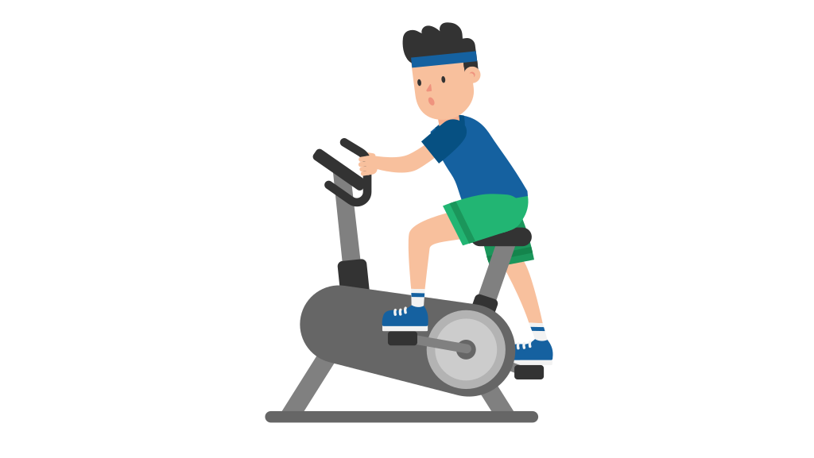

One of the most important things to strive for in the pursuit of happiness is growth.
A person who remains static in what they do is likely to start feeling a variety of emotions: inadequacy, jealousy, contempt, boredom. Being able to recognize opportunities for growth is very important. They're usually difficult to commense or agree to, but either the end result will be what you desired, or the embaressment/ failure will be an important lesson ofr the future. A person who wants to be happy should beware of going too long without a new experience, whether it be something small like trying or cooking a new cuisine, or something larger like developing a friendship with somebody completely different from the types of people you usually spend time with.
The second piece of advice:

I don't think that it's a coincidence that I spent the first two decades of my life being more inactive than any homo sapiens before me, and simultaneously depressed. I'd recommend being active to anybody, and at risk of sounding overly-dramatic, it really did save my life. This can take on many forms. Maybe for one person, they can play sports for a few hours a week and feel good, for another they might need to run every day. What works for me is a weight-lifting routine that's 6 days a week, repeating the same PPL cycle twice from Monday to Saturday with Sunday as a rest day. This has been invaluable in creating confidence and pride for me, it's allowed me to be more social and less uncomfortable in my own skin.
Muscles worked on each day in a Push, Pull, Legs (PPL) routine: